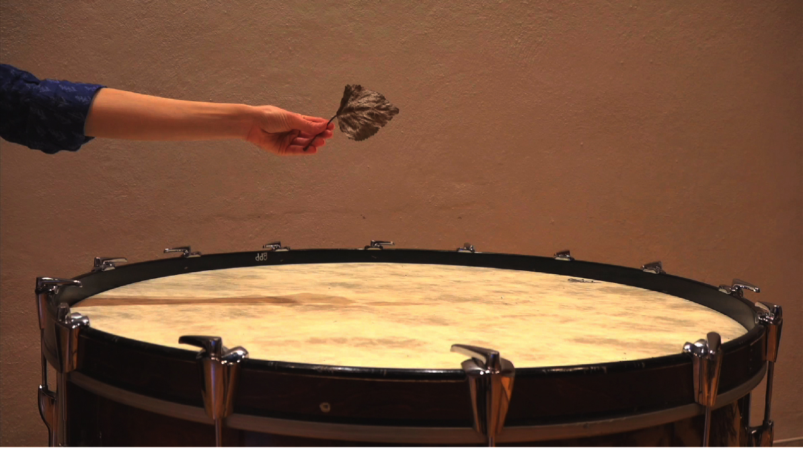
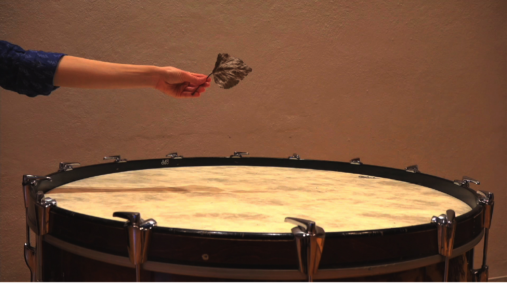
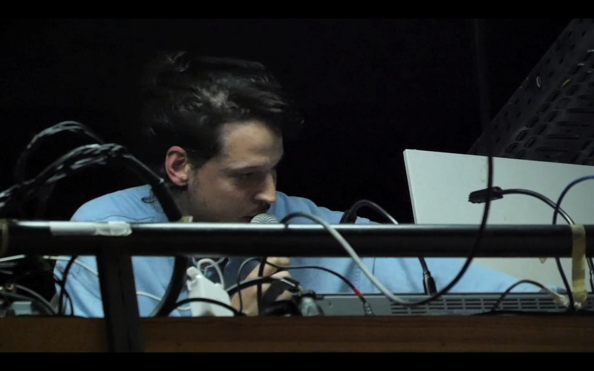
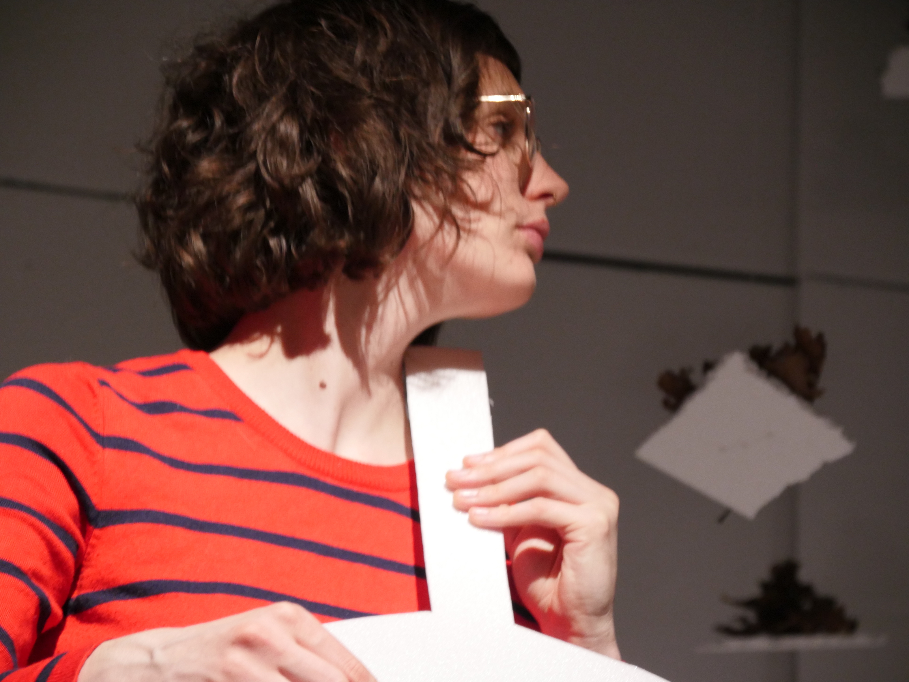

Sitzfleisch
Three performers, narrator, styrofoam instruments, video, stereo sound
30 minutes
'Sitzfleisch' was a term invented in the nineteenth century to refer to the act of sitting still during a concert using the control of one's muscles. Theorists of the time (Kant, Hegel, Schilling, Schelling, Hoffmann, etc) had argued for the heightened autonomy and independence of art, that it should shed any social function to instead signify something purely aesthetic or even transcendental. In music, this led to the now culturally entrenched practice of sitting in silence during a concert, the better to appreciate the music in a purely aesthetic way. This piece rethinks the theory behind the acts of sitting, listening, and musicking in a concert. A narrator comments on music which is played by three performers. Eventually, all 'real' instrumental sounds are sucked out of the piece, replaced instead by the sounds of styroforam cut-outs of instruments. All along, the idea that the audience is undergoing a transcendental moment is reinforced to the point of absurdity.
This piece was written in collaboration with Down The Rabbit Hole at residencies in Snape Maltings (UK), Fleet Street Theatre (DE), and PostX (BE) withs funds from Rudolf Augstein Stiftung, Hamburger Kulturstiftung, Fleet Street Theatre, and Ulysses Network.
This piece was written in collaboration with Down The Rabbit Hole at residencies in Snape Maltings (UK), Fleet Street Theatre (DE), and PostX (BE) withs funds from Rudolf Augstein Stiftung, Hamburger Kulturstiftung, Fleet Street Theatre, and Ulysses Network.
Performances
30/11/2019 My Privacy is Your Privacy, D'Apostrof, Meigem
28/11/2019 My Privacy is Your Privacy, PostX, Merelbecke
16/02/2019 Fleet Street Theatre, Hamburg
30/11/2019 My Privacy is Your Privacy, D'Apostrof, Meigem
28/11/2019 My Privacy is Your Privacy, PostX, Merelbecke
16/02/2019 Fleet Street Theatre, Hamburg

 



PostX, Merelbecke, 2019. Photos by Down The Rabbit Hole.
 


Fleet Street, Hamburg, 2019. Photos by Nina Kuttler.